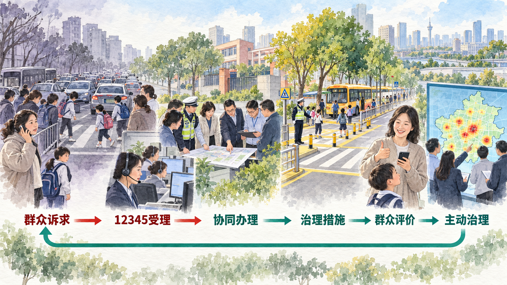
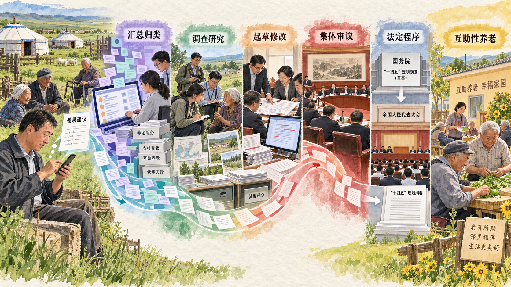

从领导范围到运行方式
“党领导一切”首先是政治原则，也必须落实为可以分析的治理结构。本节从三个问题展开：为什么中国共产党是最高政治领导力量；全面、系统、整体分别指向什么；党中央集中统一领导怎样同发扬民主、分工负责结合起来。
一、中国共产党是最高政治领导力量
教材引用习近平的重要论断：“党政军民学，东西南北中，党是领导一切的，是最高的政治领导力量。”这里的“最高”说明党在国家政治生活中处于领导核心地位，负责把握国家发展的根本方向和重大原则，并不意味着党组织取代各种国家机关和社会组织履行具体职责。
这一地位具有历史、政治和实践依据。从历史看，中国共产党在领导人民争取民族独立、人民解放和推进国家建设的过程中成为领导核心。从政治制度看，我国是工人阶级领导的、以工农联盟为基础的人民民主专政的社会主义国家，工人阶级的领导通过其先锋队中国共产党实现。从现实任务看，推进强国建设、民族复兴需要能够形成长期目标、协调重大关系和组织社会力量的政治领导核心。
参考资料｜从“五一口号”到协商建国
1948 年 4 月 30 日，中共中央发布纪念“五一”劳动节口号，其中第五条提出迅速召开政治协商会议、讨论召集人民代表大会并成立民主联合政府。各民主党派、人民团体、无党派民主人士和海外华侨团体积极响应。此后，中共中央同各民主党派及无党派民主人士交换意见，民主人士陆续进入解放区，共同讨论新政协的召开方式和协商建国问题。
国家档案局保存的相关电报、指示和来往文件，呈现了从发出政治主张、获得各界响应，到邀请代表、交换意见和共同筹备的连续过程。1949 年 9 月，中国人民政治协商会议第一届全体会议召开，通过《中国人民政治协商会议共同纲领》，选举中央人民政府委员会。党的领导地位同协商建国的历史实践由此具体结合起来。
资料来源：国家档案局《从“五一口号”到开国大典档案文献专辑》；中国政协网《〈人民政协重要文献选编〉部分篇目介绍》，2009 年 9 月 13 日。
二、党的领导是全面的、系统的、整体的
“全面”可以从四个维度理解。领导对象覆盖人大、政府、政协、监察机关、审判机关、检察机关、武装力量、人民团体、企事业单位、基层群众性自治组织和社会组织等；领导内容覆盖经济、政治、文化、社会、生态文明以及国家安全、国防军队、祖国统一、外交和党的建设；领导过程贯穿立法、决策、执行、管理和监督；领导方式包括制定大政方针、提出立法建议、推荐重要干部、开展思想宣传和发挥党组织、党员作用等。
“系统”强调机构、职能、机制和政策之间形成有机联系。党通过把方向、谋大局、定政策、促改革，统筹不同领域之间的重大关系，并通过机构职能体系、决策议事协调机构和重大决策部署落实机制，使各环节相互衔接。
“整体”强调中央、地方和基层组织共同构成统一体系。党中央作出决策部署后，党的各级组织根据职责贯彻落实，各类国家机关和社会组织中的党组织发挥作用。整体性要求方向一致，也要求每个层级和部门依法依章程履行自己的职责。
教材特别指出，党的领导是全面的、系统的、整体的，“并不是说党组织包揽包办一切、事无巨细什么都去管”。总揽全局、协调各方的目的，是形成分工合理、相互配合的行动体系，充分调动各方面的积极性。
案例研究｜一条 12345 热线为什么能调动整座城市
超大城市中的一个生活问题往往跨越多个部门。楼道堆物可能涉及社区、消防和物业，校外交通涉及交管、街道和学校，预付式消费纠纷又可能涉及市场监管、行业主管部门和属地政府。过去，多条热线、多级受理和职责交叉容易让市民反复寻找部门，也容易让问题停留在转办环节。
2019 年以来，北京以 12345 市民服务热线为主渠道推进“接诉即办”。市民诉求统一进入平台，系统根据事项和属地分类派单，承办单位在规定时限内办理并反馈，市民对解决情况作出评价。这个“接—派—办—评”闭环把分散诉求转化为可以跟踪的工单，使责任单位、办理时限和反馈结果能够被记录。
热线要真正发挥作用，关键并不在于接通电话，而在于形成跨部门协调。北京市将接诉即办作为各级党委政府“一把手”工程，街乡发现跨部门问题时可以推动相关部门共同办理。党组织发挥统筹作用，政府部门依职责解决问题，基层组织掌握具体情况，热线平台提供信息，群众评价检验办理结果，各主体在共同机制中分工协作。
当同类诉求反复出现，治理还需要从个案办理转向主动治理。北京根据热线数据识别高频共性问题，形成“每月一题”机制，对物业管理、停车秩序、养老服务等问题开展集中治理。个体来电因此不仅推动一件事情得到办理，也可能成为发现制度堵点和公共服务短板的信息来源。
截至 2023 年，北京 12345 热线全年受理市民反映 2143.8 万件，诉求解决率为 95.5%，群众满意率为 96.1%。2024 年度报告显示，诉求解决率为 96.7%，满意率为 97.0%。统一平台、组织统筹、部门履职、基层响应、数据分析和群众评价共同构成接诉即办的治理链条。

讨论题
- 如果你反映的校园周边交通问题同时涉及交管、街道和学校，谁来保证它不会在部门之间“踢皮球”？
- 解决率和满意率分别反映什么？如果两项指标不一致，应当怎样分析？
- 从“有一件办一件”转向“每月一题”，体现了治理方式怎样的变化？
资料来源：北京市人民政府《接诉即办改革》专题；北京市政务服务和数据管理局《2024 年度北京市接诉即办改革数据报告》，2025 年；新华网《北京：深化接诉即办改革 解决群众急难愁盼》，2024 年 6 月 30 日。
新闻摘录｜公共服务为什么越来越强调“以用户为中心”
经济合作与发展组织 2025 年发布的《政府概览》把更有尊严的公共服务体验列为公共治理的重要问题。报告提出，公共服务不能只从机构内部流程判断是否完成，还需要持续了解服务使用者是否容易获得服务、问题是否得到解决以及他们对办理过程有何感受。
报告介绍，公共部门可以通过用户体验调查、办理绩效数据和利益相关者参与改进服务。在提供相关数据的 27 个国家中，14 个开展全国性用户体验调查，另有 6 个在部委或机构层面开展调查。调查结果能够帮助政府识别服务设计中的障碍，调整办理标准，并为公众参与改进公共服务提供渠道。
“以用户为中心”还要求打破机构边界。学生办理一项资格认证、居民申请一项社会服务，面对的是一个完整生活问题，而不是政府内部的部门划分。公共服务设计因此需要统一标准、数据衔接和跨部门合作，使使用者减少重复提交材料和反复寻找入口。
讨论题
- 一项公共服务是否有效，应由办理速度、行政成本还是用户感受来衡量？
- 如果不同指标发生冲突，你会怎样排序并说明理由？
资料来源：OECD, Government at a Glance 2025, 2025-06-19。中文节译。
三、维护党中央权威和集中统一领导
党中央集中统一领导是党的领导的最高原则。中国共产党拥有庞大组织体系，国家治理又涉及不同地区、领域和层级。如果缺少统一的政治方向和决策核心，局部行动就可能相互冲突，重大决策也难以持续落实。维护党中央权威，首先体现为党的理论和路线方针政策、党中央决策部署得到贯彻执行。
集中统一领导同民主集中制相一致。民主集中制要求充分听取意见、开展集体讨论，在此基础上形成决定；决定形成后，各组织和成员按照统一部署分工负责。只有讨论而不能形成共同决定，容易出现议而不决；只有集中而缺少充分意见和信息，又会削弱决策质量。
案例研究｜百万网民怎样参与一份国家规划
五年规划关系经济社会发展的主要目标和重大任务，既需要从全局和长远作出顶层设计，也需要了解不同地区、行业和群体的真实问题。2020 年，习近平就“十四五”规划编制工作强调开门问策、集思广益，把加强顶层设计和坚持问计于民统一起来。
2020 年 8 月 16 日至 29 日，“十四五”规划编制工作首次通过互联网向全社会征求意见。人民日报、新华社、中央广播电视总台所属网站和客户端以及“学习强国”平台开设建言专栏。两周内累计收到网民建言超过 101.8 万条，内容涉及民生保障、科技创新、生态环境、基层治理等多个方面。
一条建议从哪里来。 内蒙古自治区达拉特旗蒲圪卜村基层干部李电波长期在村里工作。蒲圪卜村地域广、农户居住分散，村中有 800 多名留守老人。养老机构距离较远，完全依靠家庭照护也面临年轻劳动力外出等现实困难。李电波由此想到，可以依托村庄原有熟人关系和公共空间，组织身体条件较好的低龄老人、党员志愿者和邻里力量，为高龄、独居和行动不便老人提供力所能及的帮助。
2020 年，李电波以网名“云帆”在人民网“我为‘十四五’规划献一策”专栏提交发展“互助性养老”的建议。这条建议的价值首先来自基层经验：它指出了农村养老中的具体对象、现实困难和可以利用的社会资源，并提出一种介于家庭照护、公共服务和邻里互助之间的解决思路。
百万条留言怎样变成可以研究的建议。 101.8 万余条网络留言不可能按照点赞数量直接进入规划文本。有关方面阅读、归类并整理出 1000 余条建议，把大量个人表达转化为可以比较和研究的问题。养老问题之所以受到重视，也不只来自李电波一人的留言。文件起草组公开介绍，群众留言普遍关注养老问题，经统筹考虑研究，规划《建议》把“实施积极应对人口老龄化国家战略”从卫生健康领域中分离出来，单列为第四十七条。
意见整理解决的是“群众集中关注什么”，调查研究和专业论证还要回答“问题是否具有普遍性、方案是否可行、同其他目标能否协调”。“十四五”规划编制前期，中央财办、国家发展改革委组织有关部门和智库形成 200 余份重大课题研究报告。2020 年 7 月下旬至 9 月下旬，习近平先后主持企业家、长三角一体化发展、经济社会领域专家、科学家、基层代表以及教育文化卫生体育领域专家代表等座谈会。网络建言、实地调研、前期课题和不同群体的意见由此共同进入文件起草过程。公开材料没有显示李电波的留言接受过一次单独的专家评审；可以确认的是，养老问题及其解决方案进入了这一总体研究、比较和论证过程。
更多基层问题怎样进入政策议程。 2020 年 9 月 17 日召开的基层代表座谈会上，30 名来自不同领域的基层代表参加，10 名代表发言。湖南城步苗族自治县的杨淑亭结合残疾人生活实际提出无障碍设施建设问题。习近平指出，无障碍设施建设是一个国家和社会文明的标志，要高度重视。“十四五”规划《纲要》后来提出加强无障碍环境建设，完善无障碍环境建设和维护政策体系；2023 年施行的《中华人民共和国无障碍环境建设法》又从设施建设、信息交流、社会服务和监督管理等方面建立专门法律制度。这一基层问题进入国家规划和制度建设议程。
“95 后”农民工、全国人大代表邹彬反映，农民工在落户、就业、住房、子女入学和依法治理欠薪方面仍有困难。“十四五”规划《纲要》相应部署完善农民工等重点群体就业支持体系，推进农业转移人口市民化，保障随迁子女平等享有基本公共教育服务，完善根治欠薪长效机制。这些任务把个体劳动者遇到的困难转换为就业、公共服务和社会融入等公共政策问题。
湖南常宁市塔山瑶族乡中心小学副校长盘玖仁反映，偏远民族地区既存在教师数量不足和结构性缺编，也面临条件艰苦、优秀教师留不住的问题。习近平回应，这一问题很实际，“十四五”时期要着力解决、好好研究。规划《纲要》随后从增加农村教育服务供给、推进县域内教师交流轮岗等方面部署公共教育均衡发展，教育领域规划和乡村教师政策进一步从教师补充、培养培训、职称评价和待遇保障等方面推进教师队伍建设。
长沙餐馆店主刘权结合外卖经营反映平台抽成较高、快递员为赶时间难以休息等问题。“十四五”规划《纲要》提出支持和规范发展新就业形态。2021 年，经国务院同意，人力资源社会保障部等八部门印发《关于维护新就业形态劳动者劳动保障权益的指导意见》，围绕劳动报酬、休息、劳动安全、社会保险、职业伤害保障和诉求表达机制作出安排；《“十四五”就业促进规划》继续部署新就业形态劳动权益保障。这些制度回应的是平台经营者和劳动者共同面对的普遍问题。
上述四组材料能够证明基层代表提出了具体问题，也能够看到相应议题进入规划和政策。公开材料没有把某一项规划条文归因于其中某一位代表的个人发言。因此，这些材料呈现的是“基层问题进入政策议程并在规划和政策中得到回应”的议题响应链；李电波“互助性养老”则有权威材料明确确认其建议被吸收，可以建立具体提出者与规划条文之间的直接采纳链。
意见怎样形成共同决定。 文件起草组对各方面意见逐条分析，在建议稿中增写、改写、精简文字共 366 处，覆盖意见建议 546 条。建议稿还在党内一定范围征求意见，听取党内部分老同志意见，并专门听取各民主党派中央、全国工商联负责人和无党派人士代表意见。起草期间，中央政治局常委会召开 3 次会议、中央政治局召开 2 次会议审议修改，随后由党的十九届五中全会审议通过。
中央《建议》把“发展普惠型养老服务和互助性养老”写入第四十七条。国务院依据中央《建议》组织编制“十四五”规划和 2035 年远景目标纲要草案，将其进一步落实为“积极发展农村互助幸福院等互助性养老”，再提请十三届全国人大四次会议审查批准。此后，《中共中央 国务院关于加强新时代老龄工作的意见》提出，依托村级邻里互助点、农村幸福院发展互助式养老服务。从基层提出问题，到规划形成共同目标，再到专项政策明确实施载体，意见吸收由此进入国家治理的完整过程。

讨论题
- 一条网络留言要进入国家规划，需要经历哪些筛选、论证和程序？“点赞多”能否成为唯一标准？
- 如果由你为下一轮五年规划提交一条青年建议，你会怎样同时说明问题、证据和可行方案？
- 广泛征求意见与形成统一规划之间为什么需要相互配合？
资料来源：新华社《习近平对“十四五”规划编制工作网上意见征求活动作出重要指示》，2020 年 9 月 25 日；习近平《关于〈中共中央关于制定国民经济和社会发展第十四个五年规划和二〇三五年远景目标的建议〉的说明》，2020 年 11 月 3 日；人民网《“我的意见进了中南海”》，2022 年 3 月 4 日；新华社《坚守人民情怀，走好新时代的长征路》，2020 年 9 月 20 日；《中华人民共和国国民经济和社会发展第十四个五年规划和 2035 年远景目标纲要》，2021 年 3 月；人力资源社会保障部《人社部等八部门共同印发指导意见 维护新就业形态劳动者劳动保障权益》，2021 年 7 月 22 日；新华社《中共中央 国务院关于加强新时代老龄工作的意见》，2021 年 11 月 24 日。
参考资料｜民主集中制：民主与集中为什么不是二选一
现行党章规定：“民主集中制是民主基础上的集中和集中指导下的民主相结合。”这一原则同时包含意见形成和统一行动。党的上级组织要听取下级组织和党员群众的意见，下级组织要请示报告，也要独立负责地解决职责范围内的问题；重大问题按照集体领导、民主集中、个别酝酿、会议决定的原则，由委员会集体讨论作出决定。
民主为集中提供信息、经验和意见基础，使决定能够吸收不同方面的认识；集中则把讨论形成的共同判断转化为统一决定和行动。集体决定形成后，成员根据决定和分工履行职责。由此，民主集中制把充分讨论、集体决策、分工负责和贯彻执行连接成一个过程。
资料来源：《中国共产党章程》，中国共产党第二十次全国代表大会部分修改，2022 年 10 月 22 日通过。